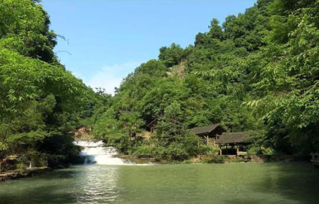

嗨！当你看到我的时候，表示您是一个
幸运的人！而我是一棵
幸运的树!
下面来听听我的故事吧……
我生于湘西自治州
我们这里是
土家族聚居的凤凰县廖家桥镇菖蒲塘村

2013年11月3日，正是深秋时分，三湘大地，生机盎然，瓜果飘香，亲爱的习大大在我们湖南省委书记徐守盛和省长杜家毫陪同下，来我们这里考察
湘西经济发展如何，扶贫开发进行得怎么样，老百姓生活还有哪些困难？习大大一直牵挂于心。他边走边向村干部了解葡萄、柚子、猕猴桃等引种和销售情况。
看到路边一筐筐水果，他拿起一个红心猕猴桃剥皮品尝，夸赞说“味道很好，口感很好。”听说这种猕猴桃一斤12到15块，一亩收入2万4，他说：“那可是高附加值啊。”
山道狭窄，看到背着满篓柚子的村民，习大大亲切地问“重不重？”听说有五六十斤，他赶紧侧身说“你快走吧，背着很重”。
枝头挂满柚子，村民们正在采摘，他来到我的身边，捧住一个柚子，轻轻一拧就摘了下来。一连轻松摘了两个，他幽默地说：“这是技术活啊。”
他又来到果园深处，同来收购的贵州客商聊起来。收购价是多少、有无滞销……问得很仔细。
看到村民们脸上洋溢着丰收的喜悦，听说家家户户都种上了果树，习大大说：“大家高兴吧？丰收了，还能卖好价钱。祝大家的果园发展越来越好，每个家庭都勤劳致富奔小康。”

看到不远处村子里都是砖房，习大大说:“房子还不错。”他表示，发展水果一靠科技，二靠市场，要牢牢盯住市场，看远一点。
临别时，乡亲们难舍难分，习大大同他们话别，了解土家族语言、服装等情况，叮嘱大家：“好好干，有奔头”。
随后，习大大沿着狭窄山路辗转来到花垣县十八洞村特困户施齐文家。木屋四壁黝黑，一盏节能灯是唯一“电器”。老人老伴石爬专问：“怎么称呼您？”村主任说：“这是总书记。”习大大握住老人的手询问年纪，听说老人64岁了，他说：“你是大姐。” “吃得饱吗？”“有果树吗？”“养猪了吗？”
在施齐文家，习大大向两位老人仔细了解生产生活情况。听说养了猪，他问道：“自己吃还是卖了？”他走进两位老人睡觉的小木房，揭开米仓盖子察看，还走进猪圈看老人家里养的两头猪。
习大大在低保户施成付家院子里和村干部、村民代表等座谈。从水、路、电到教育、医疗，他一一询问。
他说，我今天来，目的很明确，就是看望湖南少数民族乡亲们。我说了，要看真正少数民族的村子，不要临时收拾，是什么样就是什么样，真正了解大家的生活状况。
习大大表示，扶贫要实事求是，因地制宜。要精准扶贫，切忌喊口号，也不要定好高骛远的目标。
三件事要做实：一是发展生产要实事求是，二是要有基本公共保障， 三是下一代要接受教育。各级党委和政府都要想方设法，把现实问题一件件解决，探索可复制的经验。